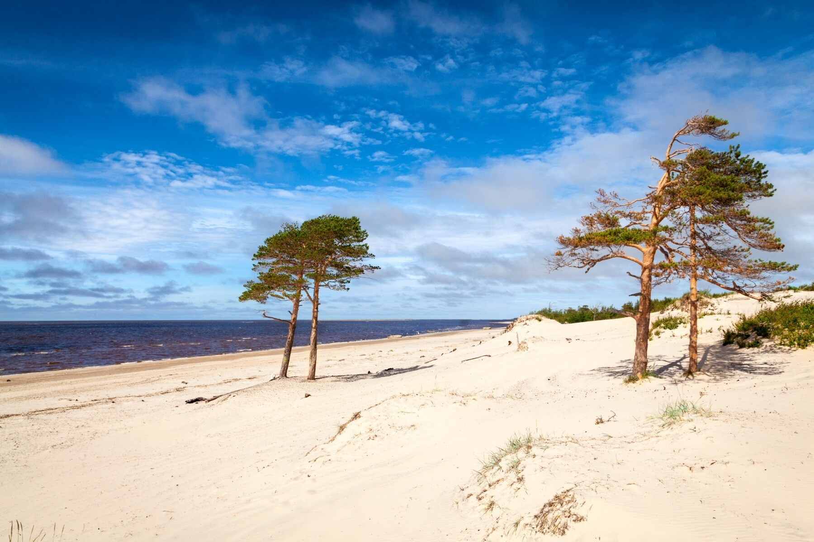
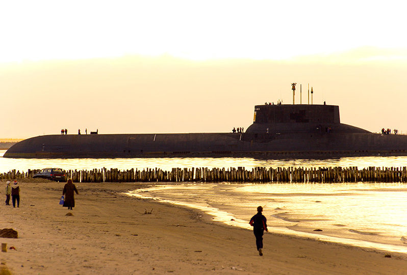
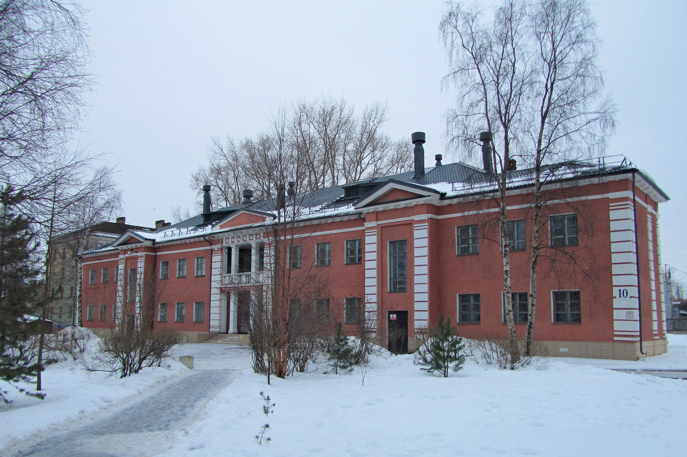

Там, где Никольское устье Северной Двины впадает в Белое море, стоит Северодвинск — второй по величине город Архангельской области. Это место уникального контраста: здесь куются самые мощные в мире атомные подводные лодки, а в паре километров от цехов гигантских заводов шумит суровый прибой и раскинулись песчаные пляжи острова Ягры.
Задолго до появления заводов, еще в XV веке, на этих землях был основан Николо-Корельский монастырь, служивший морскими воротами для первых английских послов и торговцев. Именно сюда в 1553 году пришвартовался корабль Ричарда Ченслера, что положило начало дипломатическим отношениям между Россией и Англией.
Современная история города началась в 1936 году, когда среди болот и тайги был заложен рабочий поселок Судострой (позже переименованный в Молотовск, а затем — в Северодвинск). Его главной задачей стало строительство мощнейшего судостроительного завода «Севмаш». В годы Великой Отечественной войны местный порт принимал союзные конвои («Дервиш»), доставлявшие грузы по ленд-лизу. Сегодня Северодвинск — это главный оборонный щит страны, где строят и ремонтируют атомные подводные крейсеры.
Ягры — это любимое место отдыха как местных жителей, так и туристов. Остров знаменит своим грандиозным песчаным пляжем, выходящим прямо на открытое Белое море. Летом здесь можно часами гулять вдоль прибоя во время белых ночей, а зимой — наблюдать за торосами и суровыми ледяными пейзажами.
Сразу за песчаными дюнами начинается вековой Ягринский сосновый бор — заповедный памятник природы. Извилистые сосны, ковер из мха, чистейший морской воздух и дружелюбные белки, которые охотно едят с рук, делают этот парк идеальным местом для прогулок.

Просторная прогулочная набережная на острове Ягры, названная в честь выдающегося директора судостроительного предприятия. Здесь установлены удобные скамейки, смотровые площадки и памятные знаки. С набережной открывается потрясающий вид на море, проходящие на испытания военные корабли и подводные лодки, а также на место исторической высадки английской экспедиции Ричарда Ченслера.

Чтобы понять, как посреди северных болот вырос научно-производственный гигант, обязательно стоит заглянуть в городской музей. Его интерактивные залы рассказывают всю историю края: от быта монахов Николо-Корельского монастыря до секретных разработок советских инженеров.
Особого внимания заслуживает уникальный интерактивный конструктор «Собери подлодку», где можно узнать об устройстве атомных субмарин и почувствовать себя настоящим инженером-кораблестроителем.
